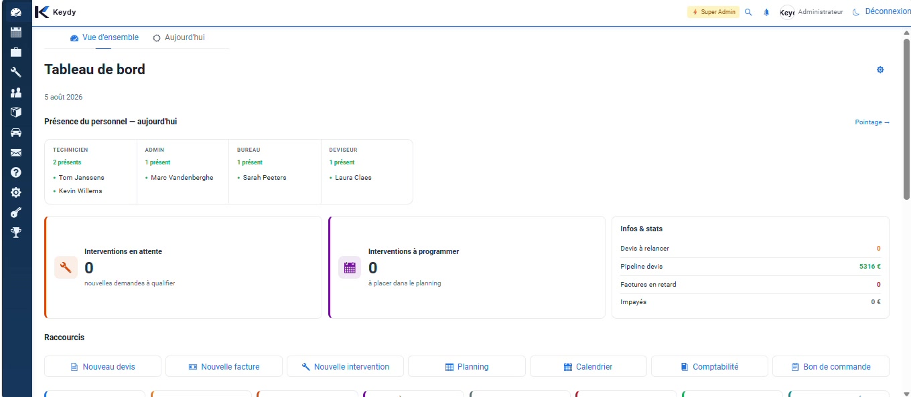
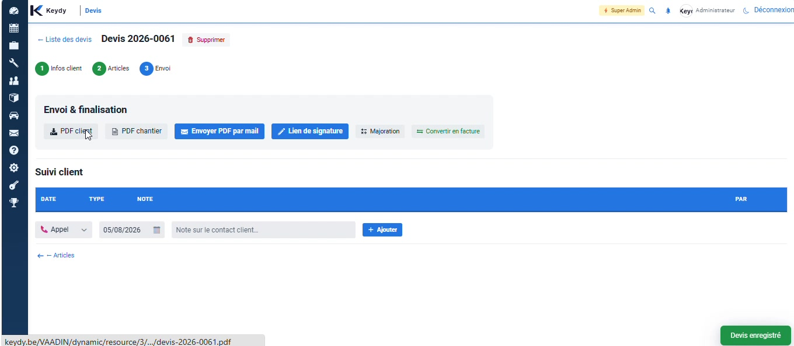
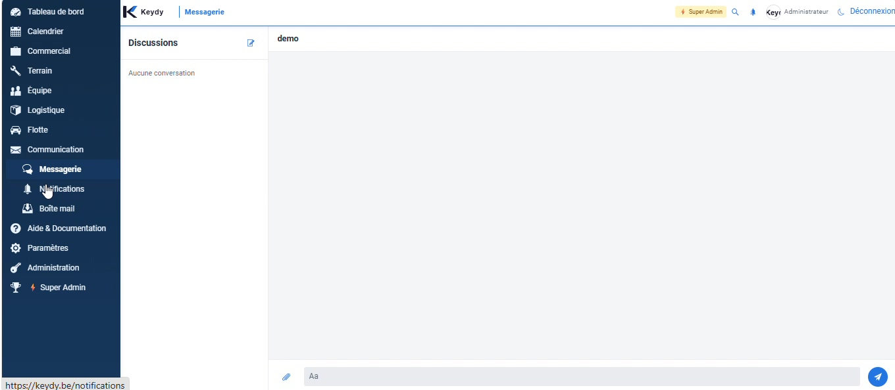
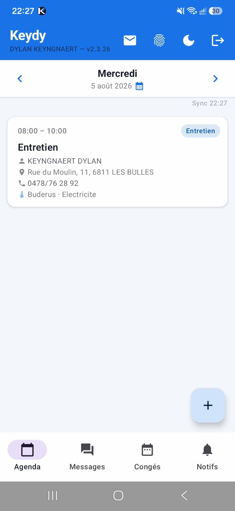
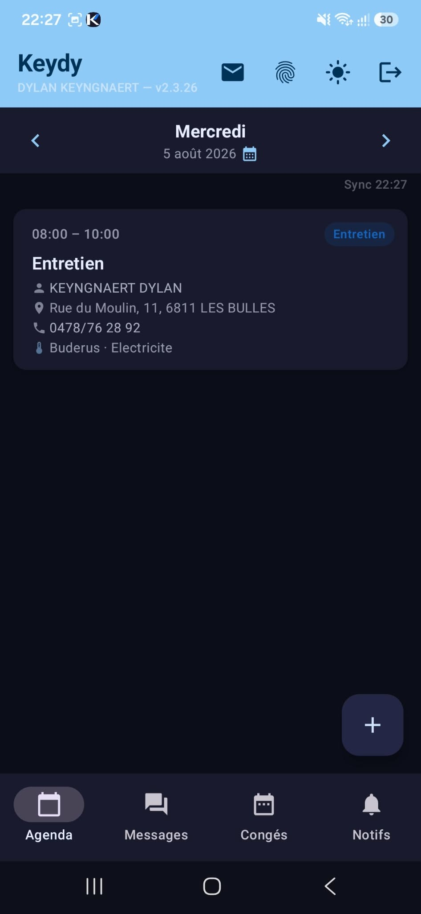

Chaque module est relié au même dossier client afin que le bureau et le terrain travaillent avec la même information.
Gardez sous les yeux les rendez-vous, alertes, indicateurs et actions qui demandent votre attention.

Créez, déplacez et attribuez les rendez-vous avec une lecture claire des disponibilités.

Conservez l'identité du client, ses coordonnées, ses sites et son historique dans un dossier structuré.

Associez les appareils et informations techniques au bon emplacement pour les retrouver lors de chaque intervention.

Préparez les lignes, variantes et états de suivi sans perdre le lien avec le client et le chantier.

Centralisez les documents commerciaux et suivez ce qui est à traiter, envoyé ou finalisé.

Filtrez les entretiens à planifier et préparez des tournées cohérentes par zone ou échéance.

Retrouvez les références et prix utiles pour accélérer l'encodage et limiter les erreurs.

Conservez les échanges utiles dans l'environnement de travail plutôt que dans des canaux dispersés.

Les techniciens consultent leurs interventions et complètent rapports, photos, attestations et informations terrain — mode clair ou sombre.


Présentez vos contraintes et voyez comment les traduire dans Keydy.